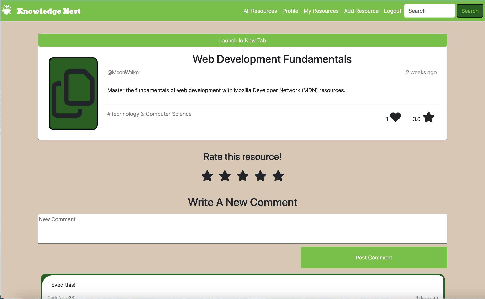

Divi (April 2024)

Summary of project.
Whether by accident or on purpose, welcome to my portfolio!
Scroll to learn more about who I am and what I've done.
At my core, I'm a problem solver. I love to jump into chaos and make things work.
When I finished university, my desire to organize chaos led me to a job as a technical recruiter for government contracts. It was fast-paced and constant work, with long hours and high expectations. I pushed hard to match each job with the perfect candidate. Every win motivated me to learn more and understand the full context of the world I was entering. The majority of the roles I recruited for were in software development and I gained a broad understanding of the different types of developer positions and environments they can work in.
My problem-solving nature manifested as a desire to help people. I wanted to do more than just recruitment and set my eyes on Human Resources. For the next five years, I learned about employment law, organizational structure, team dynamics, communication styles, and project management. I moved into new and exciting positions where I earned more responsibilities, gained more knowledge, and pushed the boundaries. All the while, I felt like I was helping employees grow within their current roles and into new positions. I helped them understand their entitlements and demystified 'human resources.'
One thing I noticed was that I kept coming back to software. After working for a global EDA company, I moved to a small, local non-profit. For the first time, I felt like I had slowed down to a crawl. Although I had a wider breadth of responsibilities and the people around me were passionate about their work, I missed the heads-down intensity of crunch time and the genuine camaraderie that came after when there was a moment to breathe. I moved back to the high-tech industry, still determined to succeed.
Eventually I understood enough about the HR path to realize it wasn't where I wanted to be 20 years from now. The problems I was facing were generally outside of my direct control to solve. Instead, most of my time focused on inspiring and advising others on recommended next steps, then trusting them to follow them. While still motivated in my current work, it wasn't as fulfilling as it once was. I wanted to have more direct impact.
I was always interested in software development but never seriously considered it as a career. After all, I was already established in the HR. Regardless, I started dabbling with Python and worked through an Intro to Computer Programming course to see if it was something I would enjoy. Throughout the course, I felt my passion reignited as I went from confusion to understanding with each passing day. I knew this was what I wanted to do. And I knew that if I wanted to do it, I would need to dive in completely.
Fast forward to today and I've completed the Web Development Bootcamp program from Lighthouse Labs, which comprised of over 60 hours a week of projects, learning activities, and assignments. I've learned the basics of Full Stack Development and have created a foundation of knowledge that I can continue to build upon. I'm continuing to work on projects and develop my skills while I look for my first software developer job.
Here are some projects I've worked on! My tech stack includes:
| Languages | Frameworks & Libraries | Testing | Systems & Databases | Other Technologies |
|---|---|---|---|---|
| Javascript | React | Cypress | SQL | NodeJS |
| Ruby | Express | Jest | PostgreSQL | Ajax |
| HTML | jQuery | Mocha | Git | ActiveRecord |
| CSS | Bootstrap | Chai | Axios | |
| Rails | EJS | |||
| SASS | ERB |
Summary of project.

Summary of project.
Here's a summary of my experience.